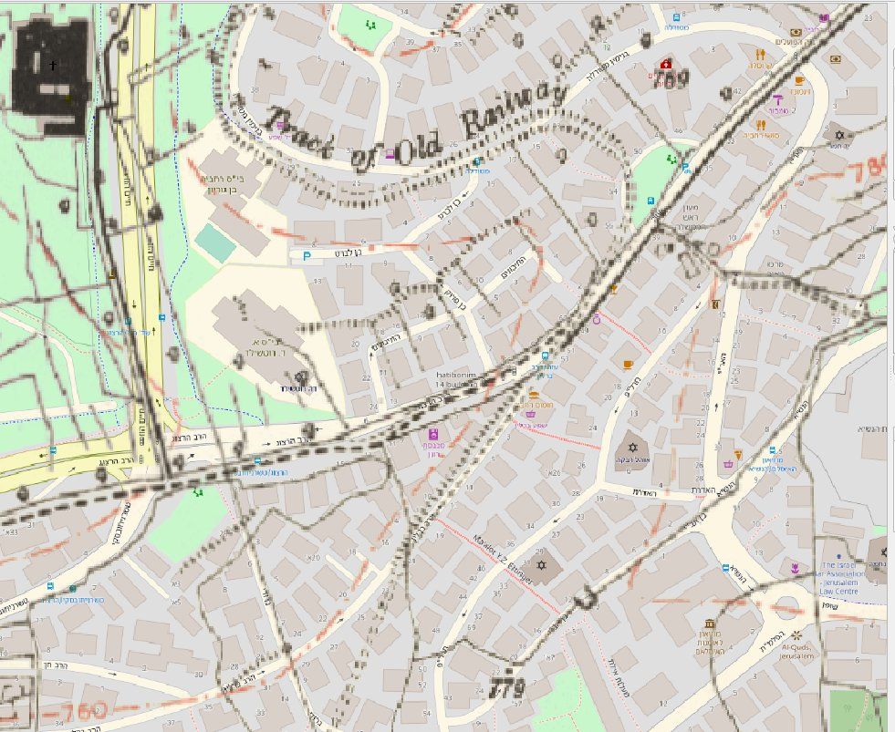
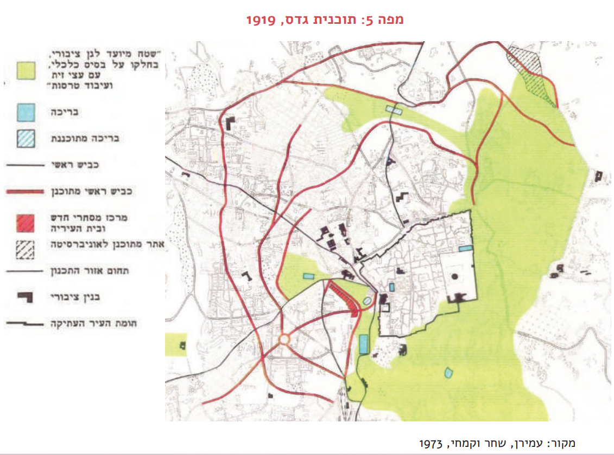
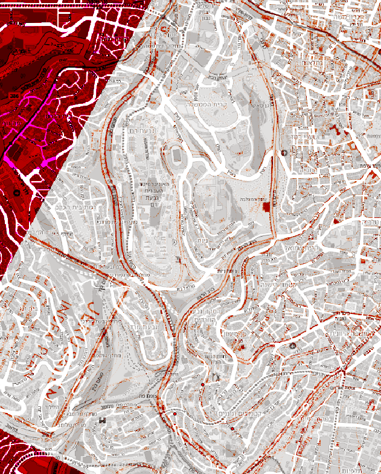
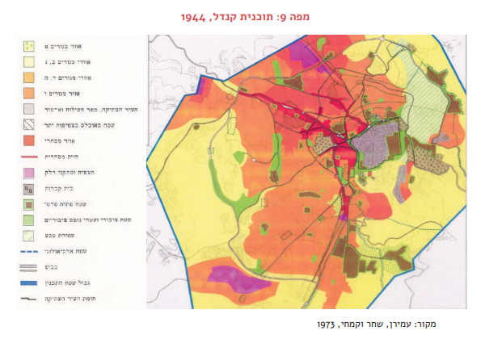

בריטים
המנדט - תכניות כלליות בעיר מאוחדת - הזווית התחבורתית
פרה מנדט/סיום מלחמת העולם הראשונה - רכבת בעיר! עוברת באיזור הרב ברלין/גינת ברודי/מטודלה

בתקופת המנדט הבריטי, ירושלים חוותה שינויים משמעותיים בתכנון העירוני, כולל תכניות תחבורה שהשפיעו על האופן שבו העיר התפתחה. תכניות אלו ניסו להתמודד עם האתגרים של עיר הולכת וגדלה, והן כללו רעיונות לתחבורה ציבורית, כבישים חדשים ושיפוט תשתיות קיימות.
מקלין 1918
גריד מושלם של עיר קטנה
גדס 1919

1924 - חניכת רחוב קינג גורג
הקרדו והדיקומנוס של ירושלים המודרנית, מצביע על יציאה יותר גדולה מהחומות.

הולידיי 1930
ניצוצות של כביש טבעת - בגין בהתהוות

בגין והזז מופיעים. רחוב מסביב לאצטדיון קוסל.

קנדל 1944

עיר עם הרבה מאוד תכניות מתאר - שבוצעו ושלא בוצעו
המחשבה היא קטנה.